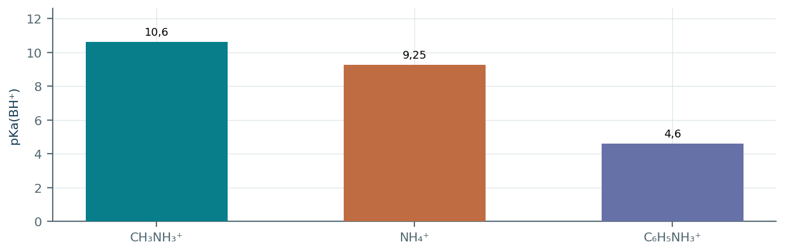
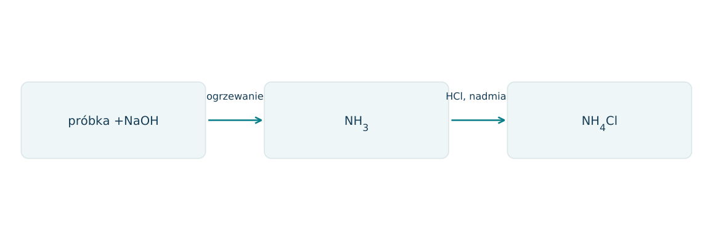
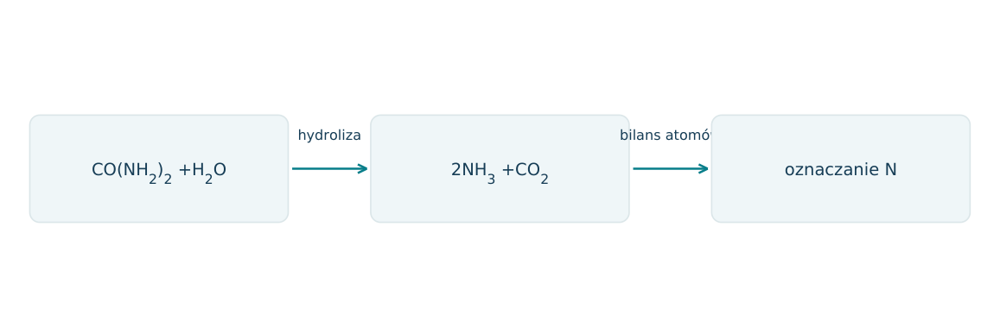
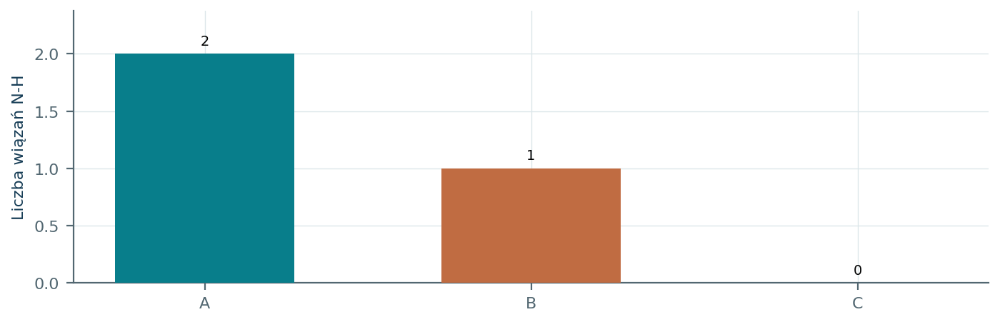
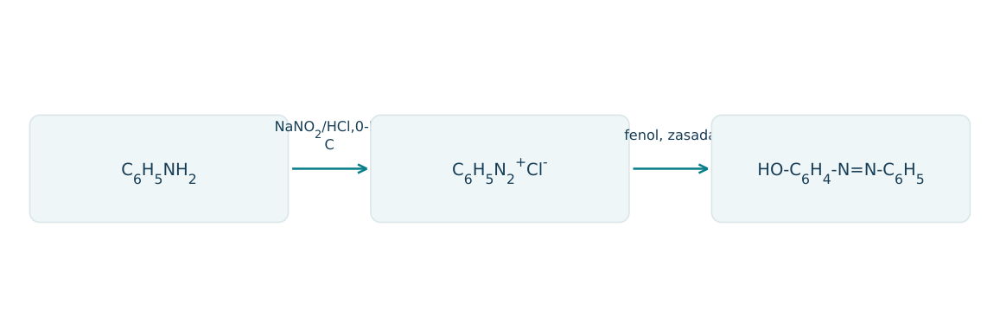
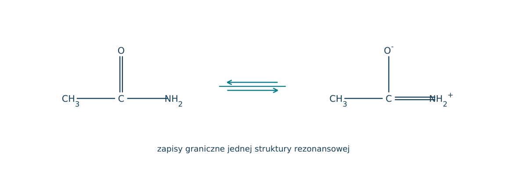
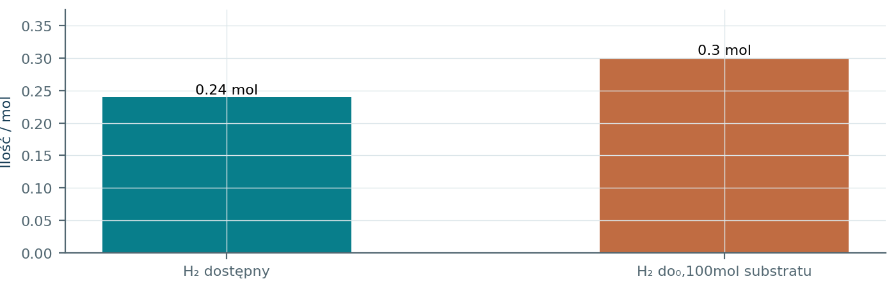

21.01 · 2 pkt
Podaj wzory metyloaminy, dimetyloaminy i trimetyloaminy. Określ rzędowość każdej z nich.
Rozwiązanie
- CH3NH2; (CH3)2NH; (CH3)3N.
- Odpowiednio I-, II- i III-rzędowa; liczy się liczba grup węglowych bezpośrednio przy N.
50 zadań · 111 pkt · odpowiedzi rozwijane po samodzielnej próbie
← KatalogZadania PDFRozwiązania PDFDane do obliczeń: H 1; C 12; N 14; O 16; Na 23; Mg 24; Al 27; P 31; S 32; Cl 35,5; K 39; Ca 40; Cr 52; Mn 55; Fe 56; Cu 64; Zn 65; Ag 108; Br 80; I 127; Ba 137 (g/mol). NA = 6,02·1023 mol-1. Vm = 22,4 dm3/mol w warunkach normalnych (0°C, 1013 hPa). W 25°C Kw = 10-14. Dane podane w zadaniu mają pierwszeństwo.
Podaj wzory metyloaminy, dimetyloaminy i trimetyloaminy. Określ rzędowość każdej z nich.
Oceń zdania A i B, wpisując P albo F. Każde zdanie fałszywe popraw lub krótko uzasadnij. A: Trimetyloamina może przyjąć proton mimo braku N-H. B: Każdy atom N w związku organicznym ma tę samą zasadowość.
Napisz wzór aniliny i etanamidu.
Narysuj wzór elektronowy metyloaminy. Zaznacz wszystkie wiązania i wolną parę na N; wyjaśnij, jak umożliwia to wiązanie H+.
Dlaczego amina może być zasadą Brønsteda?
Napisz reakcję metyloaminy z wodą.
Napisz reakcję aniliny z HCl.
Napisz reakcję CH3NH3Cl z NaOH.
Wyjaśnij, dlaczego zakwaszenie może zwiększyć rozpuszczalność aniliny w wodzie.
Dlaczego amid jest znacznie słabszą zasadą niż odpowiadająca mu amina?
Dane Kb: CH3NH2 4,4·10-4; NH3 1,8·10-5; C6H5NH2 4,0·10-10. Uszereguj zasadowość i wyjaśnij pozycję aniliny.
Czy amina III-rzędowa bez wiązania N-H może przyjąć proton? Uzasadnij.
Które czyste aminy tworzą między swoimi cząsteczkami wiązania wodorowe N-H...N: CH3NH2, (CH3)2NH, (CH3)3N?
Czy trimetyloamina może przyjmować wiązania wodorowe od wody mimo braku N-H?
Napisz hydrolizę etanamidu w środowisku kwasowym, uwzględniając formę azotu.
Napisz hydrolizę etanamidu w środowisku zasadowym.
Podaj równanie bromowania aniliny wodą bromową i obserwację.
Jak grupa NH2 wpływa na podstawienie elektrofilowe w pierścieniu aniliny bez zakwaszenia?
Źródło: redukcja grupy NO2 do NH2 zużywa 3H2 i daje 2H2O. Zapisz redukcję nitrobenzenu.
Ułóż syntezę aniliny z benzenu w dwóch etapach. Podaj produkt pośredni i rodzaj każdego etapu.
Ile gramów CH3NH2 potrzeba do reakcji z 0,10 mola HCl? M=31 g/mol.
Ile cm3 HCl 0,200 mol/dm3 zużyje 0,010 mola etyloaminy?
Oblicz procent masowy N w moczniku CO(NH2)2.
Oblicz masę NH3 z całkowitej zasadowej hydrolizy 5,9 g etanamidu, M=59 g/mol.
Roztwór CH3NH2 ma c=0,10 mol/dm3 i Kb=4,0·10-4. Oszacuj [OH-]≈√(Kb c), a następnie oceń przybliżenie przez α.
Dla B, c=0,010 mol/dm3 i Kb=10-6, oblicz przybliżone pH w 25°C.
Jon BH+ ma Ka=10-10. Oblicz Kb aminy B w 25°C i przewidź odczyn jej roztworu.
Jak rozróżnić wodne roztwory metyloaminy i etanamidu wskaźnikiem uniwersalnym? Przyjmij szkolny model obojętności etanamidu.
Związek X w zasadowej hydrolizie daje CH3COO- i NH3. Ustal X i sposób wykrycia wydzielanego gazu.
Czy każda substancja zawierająca NH2 ma taką samą zasadowość jak metyloamina? Porównaj anilinę i etanamid.
Dla CH3CH2NH2 i CH3NHCH3 określ relację izomeryczną oraz rzędowość.
Napisz reakcję kondensacji kwasu octowego z NH3 do etanamidu, zakładając ogrzewanie i odwodnienie soli amonowej.
Źródło: diamina H2N-R-NH2 z dikwasem HOOC-R'-COOH tworzy poliamid i wodę. Napisz powtarzalny fragment łańcucha.
Dlaczego hydroliza poliamidu wymaga uwzględnienia form jonowych produktów zależnych od pH?
1 mol cząsteczek diaminy zawierających dwie grupy NH2 protonowano całkowicie. Ile moli HCl zużyto i jaki ładunek ma kation?
Anilina rozpuszcza się po dodaniu HCl, po czym po NaOH ponownie pojawia się faza organiczna. Zapisz oba procesy jonowo.
Ile moli H2 potrzeba według podanego wcześniej modelu do redukcji 0,20 mola nitrobenzenu? Ile moli H2O powstanie?
Związek C2H5NO jest amidem bez podstawników przy N. Napisz wzór i produkt organiczny hydrolizy zasadowej.
Wskaż, które atomy N w H2NCH2CONH2 należą do aminy, a które do amidu, i porównaj możliwość wiązania H+.
Do 0,010 mola metyloaminy dodano 0,010 mola HCl. a) Napisz reakcję jonową. b) Określ odczyn roztworu otrzymanej soli i uzasadnij. c) Zapisz odtworzenie aminy przez NaOH. d) Po dodaniu kwasu octowego i samym zmieszaniu amina tworzy sól: napisz jej wzór; źródło: ogrzewanie z odwodnieniem soli może dać amid.
Każdy numer 41-50 oznacza jedno zadanie główne; podpunkty są oceniane osobno.
Podano pKa sprzężonych kwasów BH+: CH3NH3+10,6; NH4+9,25; C6H5NH3+4,6. Im większa pKa(BH+), tym silniejsza zasada B w wodzie. Dla pary B/BH+ obowiązuje [B]/[BH+]=10^(pH-pKa).

21.41.1 (2 pkt) Uszereguj zasady i oblicz stosunek form obojętnej/protonowanej aniliny przy pH=6,6.
21.41.2 (1 pkt) Zapisz reakcję metyloaminy z wodą, zaznaczając pary sprzężone.
21.41.3 (1 pkt) Wyjaśnij wpływ zakwaszenia na rozpuszczalność słabo rozpuszczalnej aniliny w wodzie.
Anilina<NH3<metyloamina; [B]/[BH+]=10^(6,6-4,6)=100.
CH3NH2+H2O⇌CH3NH3++OH-; CH3NH3+/CH3NH2 i H2O/OH-.
Powstaje jon aniliniowy i jego sól; zwiększenie udziału formy jonowej sprzyja przejściu do fazy wodnej.
Mieszaninę aniliny i toluenu rozpuszczono w fazie organicznej niemieszającej się z wodą. Po ekstrakcji wodnym HCl anilina przeszła do fazy wodnej jako sól. Rysunek pokazuje rozdzielacz; położenie warstw podano umownie i nie służy do ustalania ich gęstości.
21.42.1 (2 pkt) Zapisz równanie tworzenia soli i odtwarzania aniliny za pomocą NaOH.
21.42.2 (1 pkt) Ile cm3 NaOH0,200 mol/dm3 potrzeba do odtworzenia 0,0100 mola aniliny, bez nadmiaru HCl?
21.42.3 (1 pkt) Dlaczego toluen pozostaje w fazie organicznej w tym postępowaniu?
C6H5NH2+HCl→C6H5NH3Cl; C6H5NH3++OH-→C6H5NH2+H2O.
V=0,0100/0,200=0,0500 dm3=50,0 cm3.
W tych warunkach nie tworzy soli przez zwykłe przyłączenie H+ i pozostaje niepolarnym związkiem preferującym fazę organiczną.
Acetamid CH3CONH2 ogrzewano z NaOH. Gaz przepuszczono do nadmiaru HCl. Dla 0,590 g próbki technicznej uzyskano 0,00800 mola NH4Cl; obojętna domieszka nie zawierała N i nie reagowała. M(acetamidu)=59,0.

21.43.1 (2 pkt) Zapisz równania hydrolizy i pochłaniania gazu.
21.43.2 (1 pkt) Wyznacz czystość próbki.
21.43.3 (1 pkt) Jak odróżnić otrzymany gaz od CO2 za pomocą wilgotnego papierka wskaźnikowego?
CH3CONH2+NaOH→CH3COONa+NH3; NH3+HCl→NH4Cl.
nacetamidu=0,00800; m=0,472 g; czystość 80,0%.
NH3 daje odczyn zasadowy, CO2 kwaśny; potrzebna wilgoć do utworzenia roztworu.
Nawóz ma zawierać mocznik CO(NH2)2 i obojętny wypełniacz. Na etykiecie podano 42,0% N. M(mocznika)=60,0. Podczas pełnej hydrolizy 1 mol mocznika może dać 2 mole NH3 i 1 mol CO2, co przedstawia schemat.

21.44.1 (2 pkt) Zapisz równanie i oblicz procent N w czystym moczniku.
21.44.2 (1 pkt) Jaki udział masowy mocznika wynika z etykiety?
21.44.3 (1 pkt) Czy sam pomiar N dowodzi, że cały N rzeczywiście pochodzi z mocznika?
CO(NH2)2+H2O→2NH3+CO2; 28/60·100%=46,7%.
42,0/(46,6667)=0,900=90,0%.
Nie; inne związki azotu mogą dać podobny wynik. Interpretacja wymaga założenia o składzie lub dodatkowej identyfikacji.
Związki A-C mają ten sam wzór C3H9N. Wykres słupkowy podaje liczbę wiązań N-H w jednej cząsteczce: A2, B1, C0. A ma nierozgałęziony łańcuch. Rzędowość aminy określa liczba grup węglowych przy N.

21.45.1 (2 pkt) Podaj wzory półstrukturalne i nazwy A-C.
21.45.2 (1 pkt) Dlaczego C nadal może być zasadą, mimo braku wiązania N-H?
21.45.3 (1 pkt) Ile moli HCl przyłączy 0,0200 mola każdej z tych amin w prostym tworzeniu soli?
A CH3CH2CH2NH2 propan-1-amina; B CH3CH2NHCH3 N-metyloetanoamina; C N(CH3)3 trimetyloamina.
N ma wolną parę elektronową zdolną do przyłączenia protonu.
Po 0,0200 mola; każda cząsteczka ma jedno zasadowe centrum N.
Podano: anilina z NaNO2/HCl w 0-5°C daje C6H5N2+Cl-. Sól ta reaguje z fenolem w zasadowym środowisku, tworząc głównie związek para-HO-C6H4-N=N-C6H5. Produkt jest barwny. Analizuj podaną przemianę, bez projektowania jej wykonania.

21.46.1 (2 pkt) Ustal wzór sumaryczny produktu barwnego i nazwij fragment łączący pierścienie.
21.46.2 (1 pkt) Oblicz masę produktu z 0,0100 mola aniliny przy wydajności całkowitej 70,0%; M=198.
21.46.3 (1 pkt) Dlaczego sam kolor nie wystarcza do udowodnienia dokładnej struktury produktu?
C12H10N2O; grupa azowa -N=N-.
0,0100·0,700·198=1,386 g.
Różne związki i izomery mogą być barwne; kolor nie określa jednoznacznie położenia podstawników ani całej struktury.
Benzokaina ma grupy NH2 i COOC2H5 w pozycjach para pierścienia. W kwasie tworzy sól amoniową, a podczas pełnej hydrolizy estru daje kwas 4-aminobenzoesowy i alkohol. M benzokainy 165, kwasu 137.
21.47.1 (2 pkt) Zapisz wzory produktów hydrolizy po odtworzeniu obojętnych form i nazwij alkohol.
21.47.2 (1 pkt) Oblicz masę kwasu z 3,30 g benzokainy przy wydajności 90,0%.
21.47.3 (1 pkt) Wyjaśnij, dlaczego rozpuszczanie w HCl i hydroliza estru to różne przemiany.
H2N-C6H4-COOH i C2H5OH, etanol (podstawniki para).
n=0,0200; nproduktu 0,0180; m=2,466 g.
Pierwsze protonuje NH2 bez rozcinania szkieletu; hydroliza rozrywa wiązanie estrowe i zmienia połączenia atomów.
0,0100 mola lotnej aminy zajmuje 0,2494 dm3 przy 100kPa i 300K, a próbka ma masę 0,450 g. Podano ogólny wzór nasyconych acyklicznych amin z jednym N: CnH2n+3N. Próba strukturalna wykazała dwie grupy H przy N.
21.48.1 (2 pkt) Sprawdź zgodność danych gazowych z podanym n (R8,314), wyznacz M i wzór sumaryczny.
21.48.2 (1 pkt) Ustal wzór aminy na podstawie liczby wiązań N-H i podaj drugi izomer konstytucyjny.
21.48.3 (1 pkt) Czy sam pomiar p, V, T, m rozróżniłby te izomery?
n=pV/RT≈0,0100 mol; M=45,0; 14n+17=45, więc C2H7N.
CH3CH2NH2, etanoamina; drugi izomer (CH3)2NH, dimetyloamina.
Nie; mają tę samą M i wzór sumaryczny, potrzebna informacja o budowie.
A=CH3CH2NH2, B=CH3CONH2. Oba zawierają N, lecz w amidzie jego para może być delokalizowana w układzie O=C-N. Na schemacie zaznaczono dwa graniczne zapisy B. Nie są to dwa różne związki w równowadze.

21.49.1 (2 pkt) Wyjaśnij, który związek zwykle łatwiej protonuje się na N, odwołując się do dostępności pary.
21.49.2 (1 pkt) Czy słabsza zasadowość B oznacza brak jakichkolwiek reakcji z kwasem?
21.49.3 (1 pkt) Wskaż produkty pełnej kwaśnej hydrolizy B w nadmiarze HCl.
A; w amidzie para N jest delokalizowana w grupie amidowej i mniej dostępna do wiązania H+.
Nie; amid może np. ulegać hydrolizie kwasowej, a protonowanie może dotyczyć O.
CH3COOH i NH4Cl, ponieważ uwolniony NH3 jest protonowany.
Nitrobenzen redukuje się według C6H5NO2+3H2→C6H5NH2+2H2O. Użyto 12,3 g nitrobenzenu i 0,240 mola H2. Wydajność względem reagenta ograniczającego 80,0%; M substratu 123, aminy 93.

21.50.1 (2 pkt) Wskaż ograniczający reagent i oblicz rzeczywistą masę aminy.
21.50.2 (1 pkt) Ustal zmianę stopnia utlenienia N i liczbę elektronów na N.
21.50.3 (1 pkt) Jak zmieni się rozpuszczalność produktu po dodaniu HCl i dlaczego?
H2 ogranicza: 0,240/3=0,0800 mol teoretycznie; rzeczywiście 0,0640 mol, m=5,952 g.
N+III w NO2 do-III w NH2; przyjmuje 6 elektronów.
Zwiększy się dzięki tworzeniu soli aniliniowej C6H5NH3Cl.